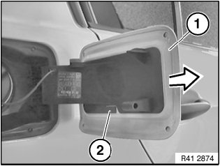

41 63 000 Removing and Installing Flap For Fuel Filler Neck
41 63 000 Removing And Installing Flap For Fuel Filler Neck

NOTE: The illustration is a schematic representation and is to be applied to the relevant vehicle type.
Open fuel filler flap.
Lever out lock (2) and detach fuel filler flap (1) in direction of arrow.